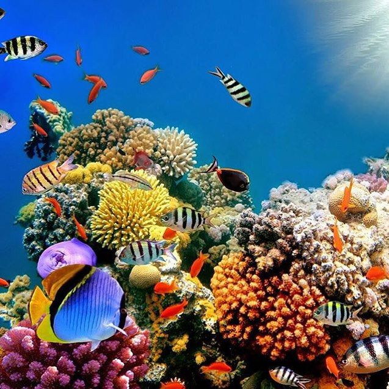

Geology and Geography
Content
Home
Geology and geography
Ecology
Tourism
The Great Barrier Reef is a distinct feature of the East Australian Cordillera division. It includes the smaller Murray Islands. It reaches from Torres Strait (between Bramble Cay, its northernmost island, and the south coast of Papua New Guinea) in the north to the unnamed passage between Lady Elliot Island (its southernmost island) and Fraser Island in the south. Lady Elliot Island is located 1,915 km (1,190 mi) southeast of Bramble Cay as the crow flies.
The Plate tectonic theory indicates Australia has moved northwards at a rate of 7 cm (2.8 in) per year, starting during the Cenozoic. Eastern Australia experienced a period of tectonic uplift, which moved the drainage divide in Queensland 400 km (250 mi) inland. Also during this time, Queensland experienced volcanic eruptions leading to central and shield volcanoes and basalt flows. Some of these became high islands. After the Coral Sea Basin formed, coral reefs began to grow in the Basin, but until about 25 million years ago, northern Queensland was still in temperate waters south of the tropics—too cool to support coral growth. The Great Barrier Reef's development history is complex; after Queensland drifted into tropical waters, it was largely influenced by reef growth and decline as sea level changed.
Reefs can increase in diameter by 1 to 3 centimetres (0.39 to 1.18 in) per year, and grow vertically anywhere from 1 to 25 cm (0.39 to 9.84 in) per year; however, they grow only above a depth of 150 metres (490 ft) due to their need for sunlight, and cannot grow above sea level. When Queensland edged into tropical waters 24 million years ago, some coral grew, but a sedimentation regime quickly developed with erosion of the Great Dividing Range; creating river deltas, oozes and turbidites, unsuitable conditions for coral growth. 10 million years ago, the sea level significantly lowered, which further enabled sedimentation. The reef's substrate may have needed to build up from the sediment until its edge was too far away for suspended sediments to inhibit coral growth. In addition, approximately 400,000 years ago there was a particularly warm interglacial period with higher sea levels and a 4 °C (7 °F) water temperature change.
The land that formed the substrate of the current Great Barrier Reef was a coastal plain formed from the eroded sediments of the Great Dividing Range with some larger hills (most of which were themselves remnants of older reefs or, in rare cases, volcanoes). The Reef Research Centre, a Cooperative Research Centre, has found coral 'skeleton' deposits that date back half a million years. The Great Barrier Reef Marine Park Authority (GBRMPA) considers the earliest evidence of complete reef structures to have been 600,000 years ago. According to the GBRMPA, the current, living reef structure is believed to have begun growing on the older platform about 20,000 years ago. The Australian Institute of Marine Science agrees, placing the beginning of the growth of the current reef at the time of the Last Glacial Maximum. At around that time, sea level was 120 metres (390 ft) lower than it is today.

Coral
From 20,000 years ago until 6,000 years ago, sea level rose steadily around the world. As it rose, the corals could then grow higher on the newly submerged maritime margins of the hills of the coastal plain. By around 13,000 years ago the sea level was only 60 metres (200 ft) lower than the present day, and corals began to surround the hills of the coastal plain, which were, by then, continental islands. As the sea level rose further still, most of the continental islands were submerged. The corals could then overgrow the submerged hills, to form the present cays and reefs. Sea level here has not risen significantly in the last 6,000 years. The CRC Reef Research Centre estimates the age of the present, living reef structure at 6,000 to 8,000 years old. The shallow water reefs that can be seen in air-photographs and satellite images cover an area of 20,679 km2, most (about 80%) of which[31] has grown on top of limestone platforms that are relics of past (Pleistocene) phases of reef growth.
The remains of an ancient barrier reef similar to the Great Barrier Reef can be found in The Kimberley, Western Australia.The Great Barrier Reef World Heritage Area has been divided into 70 bioregions, of which 30 are reef bioregions. In the northern part of the Great Barrier Reef, ribbon reefs and deltaic reefs have formed; these structures are not found in the rest of the reef system. There are no atolls in the system, and reefs attached to the mainland are rare.
Fringing reefs are distributed widely, but are most common towards the southern part of the Great Barrier Reef, attached to high islands, for example, the Whitsunday Islands. Lagoonal reefs are found in the southern Great Barrier Reef, and further north, off the coast of Princess Charlotte Bay. Cresentic reefs are the most common shape of reef in the middle of the system, for example the reefs surrounding Lizard Island. Cresentic reefs are also found in the far north of the Great Barrier Reef Marine Park, and in the Swain Reefs (20–22 degrees south). Planar reefs are found in the northern and southern parts, near Cape York Peninsula, Princess Charlotte Bay, and Cairns. Most of the islands on the reef are found on planar reefs.